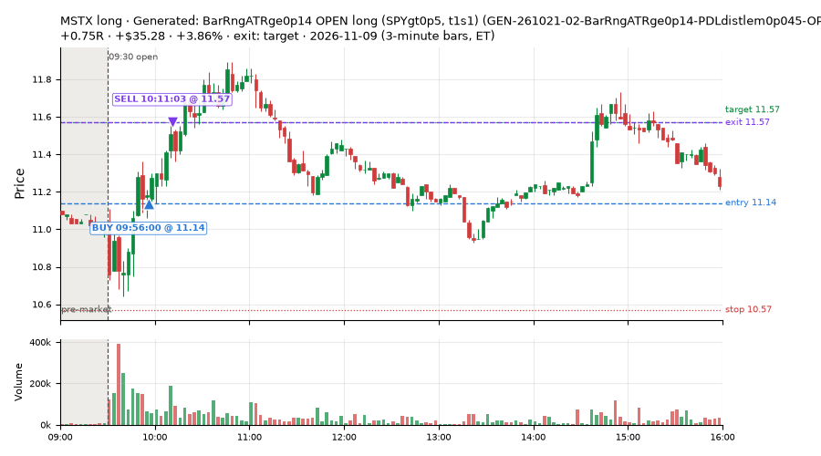
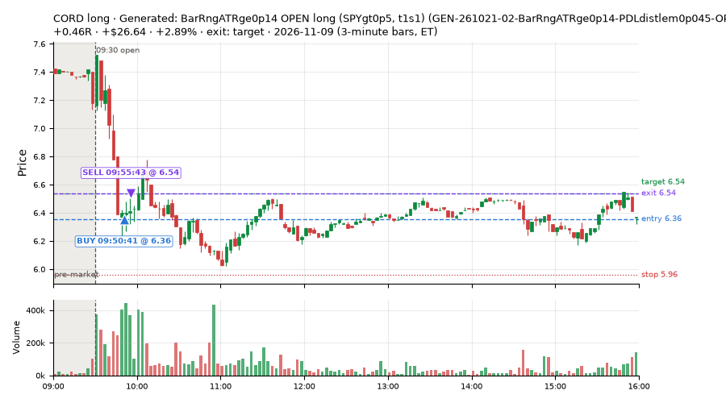
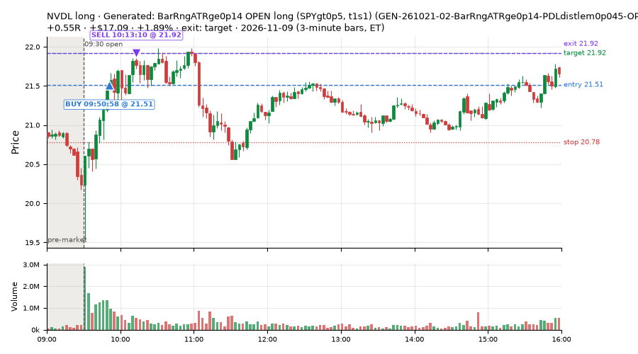
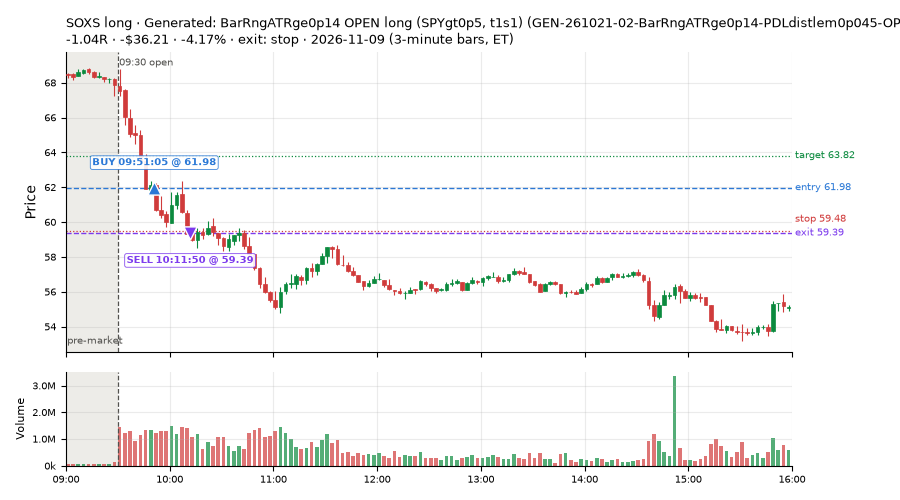
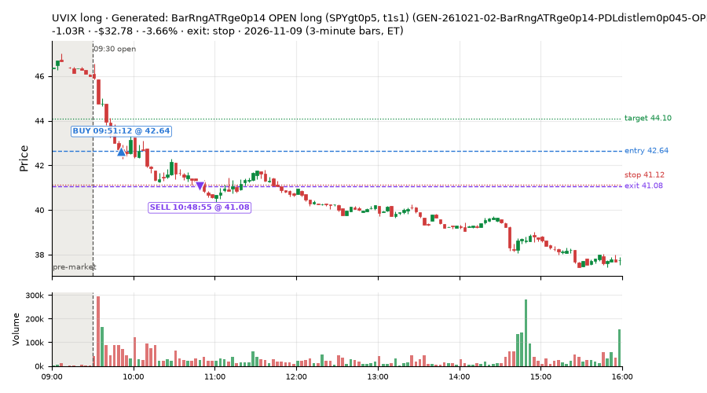
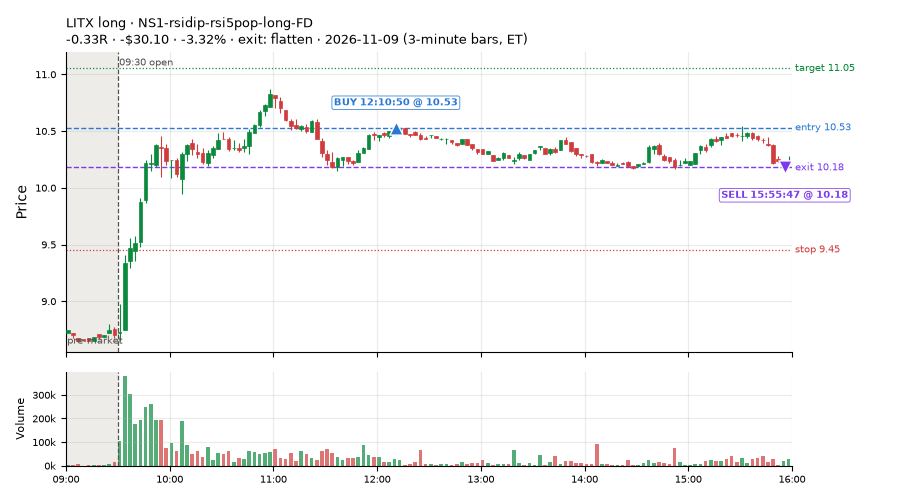
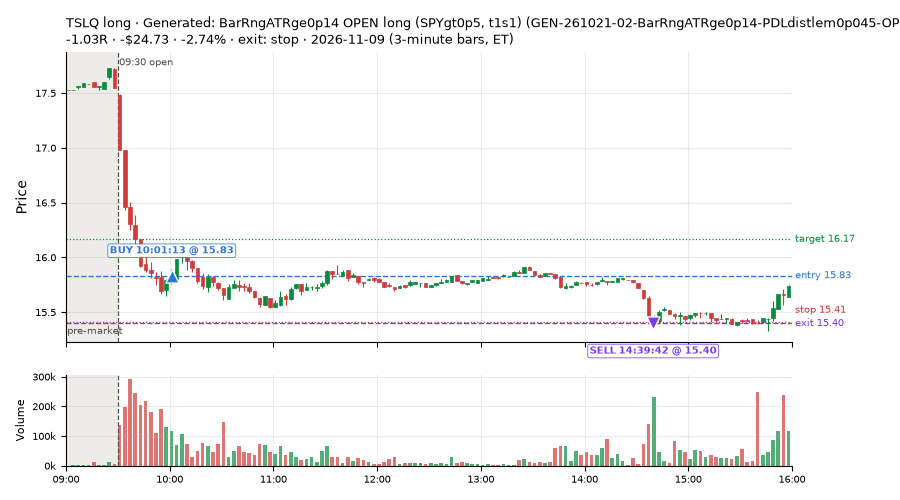
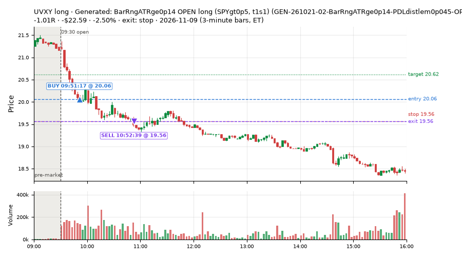

65 trades · win rate 57% · P/L $0.41
PROBATION: no live setup has passed both locked test periods. 10 owner-directed setups added 2026-10-08 (MarcoFlow top 5 + 5 new), untested live. RW6G1 (RW6 + VWAP band guard) added 2026-10-09, probation.

| Symbol | Setup | Side | In | Out | Entry | Exit | Exit reason | % gained | P/L |
|---|---|---|---|---|---|---|---|---|---|
| MSTX | Generated: BarRngATRge0p14 OPEN long (SPYgt0p5, t1s1) (GEN-261021-02-BarRngATRge0p14-PDLdistlem0p045-OPEN-SPYgt0p5-t1s1-long) | long | 09:56 | 10:11 | 11.14 | 11.57 | target | +3.86% | $35.28 |
| CORD | Generated: BarRngATRge0p14 OPEN long (SPYgt0p5, t1s1) (GEN-261021-02-BarRngATRge0p14-PDLdistlem0p045-OPEN-SPYgt0p5-t1s1-long) | long | 09:50 | 09:55 | 6.36 | 6.54 | target | +2.89% | $26.64 |
| NVDL | Generated: BarRngATRge0p14 OPEN long (SPYgt0p5, t1s1) (GEN-261021-02-BarRngATRge0p14-PDLdistlem0p045-OPEN-SPYgt0p5-t1s1-long) | long | 09:50 | 10:13 | 21.51 | 21.92 | target | +1.89% | $17.09 |
| Symbol | Setup | Side | In | Out | Entry | Exit | Exit reason | % lost | P/L |
|---|---|---|---|---|---|---|---|---|---|
| SOXS | GEN-261021-02-BarRngATRge0p14-PDLdistlem0p045-OPEN-SPYgt0p5-t1s1-long | long | 09:51 | 10:11 | 61.98 | 59.39 | stop | -4.17% | $-36.21 |
| UVIX | GEN-261021-02-BarRngATRge0p14-PDLdistlem0p045-OPEN-SPYgt0p5-t1s1-long | long | 09:51 | 10:48 | 42.64 | 41.08 | stop | -3.66% | $-32.78 |
| LITX | NS1-rsidip-rsi5pop-long-FD | long | 12:10 | 15:55 | 10.53 | 10.18 | flatten | -3.32% | $-30.10 |
| TSLQ | GEN-261021-02-BarRngATRge0p14-PDLdistlem0p045-OPEN-SPYgt0p5-t1s1-long | long | 10:01 | 14:39 | 15.83 | 15.40 | stop | -2.74% | $-24.73 |
| UVXY | GEN-261021-02-BarRngATRge0p14-PDLdistlem0p045-OPEN-SPYgt0p5-t1s1-long | long | 09:51 | 10:52 | 20.06 | 19.56 | stop | -2.50% | $-22.59 |








Signal to fill: median 2s, 90th percentile 4s (65 trades). Bars close each minute; the order follows the bar close.
Best excursion (MFE): median 0.55R; worst (MAE) median 0.54R. 18% of trades never got +0.25R in our favour; 2 reached +1R and still closed at or below 0.
| Symbol | Setup | Best R | Worst R | Closed R |
|---|---|---|---|---|
| EQNR | GEN-261021-02-BarRngATRge0p14-PDLdistlem0p045-OPEN-SPYgt0p5-t1s1-long | +1.04 | -1.09 | -1.09 |
| OKTA | NS4-pm-vwap-reclaim-oversold-short-FD | +0.55 | -1.23 | -1.23 |
| TSLQ | GEN-261021-02-BarRngATRge0p14-PDLdistlem0p045-OPEN-SPYgt0p5-t1s1-long | +0.68 | -1.06 | -1.03 |
| PDD | GEN-261021-02-BarRngATRge0p14-PDLdistlem0p045-OPEN-SPYgt0p5-t1s1-long | +0.61 | -1.04 | -1.01 |
| VIXY | GEN-261021-02-BarRngATRge0p14-PDLdistlem0p045-OPEN-SPYgt0p5-t1s1-long | +0.44 | -1.10 | -1.11 |
| Entry time | Trades | Win | Avg R | P/L |
|---|---|---|---|---|
| 09:50-10:30 | 29 | 48% | -0.11 | $-60.60 |
| 10:30-11:30 | 1 | 100% | +0.44 | $7.80 |
| 11:30-13:00 | 14 | 79% | +0.26 | $34.70 |
| 13:00-14:00 | 9 | 67% | -0.08 | $2.39 |
| 14:00-16:00 | 12 | 42% | -0.11 | $16.12 |
| Setup | Trades | Win | Avg R | Adj R (net of SPY) | Avg R ex-market (all sessions) | P/L |
|---|---|---|---|---|---|---|
| Panic Flush Reversal (3x volume) (CWT05-flush-m05-v3-long) | 3.0 | 100% | +0.51 | +0.38 | -0.06 (beta +1.80, n 52) | $16.18 |
| Generated: BarRngATRge0p14 OPEN long (SPYgt0p5, t1s1) (GEN-261021-02-BarRngATRge0p14-PDLdistlem0p045-OPEN-SPYgt0p5-t1s1-long) | 29.0 | 48% | -0.11 | -0.47 | +0.24 (beta -0.77, n 29) | $-60.60 |
| NS1-rsidip-rsi5pop-long-FD | 22.0 | 77% | +0.16 | +0.02 | -0.09 (beta +1.32, n 82) | $55.28 |
| NS4-pm-vwap-reclaim-oversold-short-FD | 3.0 | 33% | -0.56 | -0.39 | -0.07 (beta -4.61, n 32) | $-18.95 |
| Afternoon Blow-off Short (exhaustion_short) failed Apr-Jun holdout: -0.020R/trade over 622 trades | 4.0 | 50% | +0.23 | +0.22 | -0.01 (beta -0.35, n 83) | $14.91 |
| Index Last-Half-Hour Momentum (intraday_momentum) failed Apr-Jun holdout: -0.091R/trade over 147 trades | 4.0 | 0% | -0.58 | -0.07 | -0.34 (beta +0.25, n 49) | $-6.41 |
Market direction (SPY, beta 1) accounted for $149.00 of today's $0.41; the rest ($-148.59) came from the setups themselves. Avg R net of SPY: -0.20 (incl. a hedge leg's cost; report only).
16 setups live today. Today: 226 signals, 65 taken, 1 lost because another setup held the symbol (0%). Since 2026-10-09 (22 sessions): 9125 signals, 3719 taken, 755 lost to other setups (8%). Peak open positions today 29 of 400 slots. Earnings blackout removed 1439 symbols before scanning.
Simulated playing time (not live): 5074 what-if trades of signals not taken, avg -0.13R, 49% winners; of them 602 lost to another setup (avg +0.03R).
Silent: IDX1-qqq100-0955-TQQQ-trail, IDX1-qqq100-0955-TQQQ-hold, IDX2-spy075-0945-3x-trail, IDX3-spy075-0955-3x-trail, IDX5-spy050-0945-3x-trail · Crowded out: MF3-open-flowsell-rsi5hi, RW4-ns3-adv150-short-FD, RW4-ns3-adv150-short, MF4-h40-open-flowsell-FD, NS3-failed-vwap-reclaim-short-FD · Starved: MF1-945-flowsell-vwapup, MF5-flowsell-vwapup-rsi5hi, exhaustion_short-FD, orb20_a, RW6G1-ns2-up3-vwap2sd-short, LIQ-pdl-sweep-open15-vwap-long, ST5-pdbrkup-short-mid-t05s1-FD, ST3-rsi5up-short-pm-t1s1-FD, NS2-sma50break-overbought-short, MF1-945-flowsell-vwapup-FD
| Prio | Setup | Today sig / taken | Sessions | Signals / taken / trades | Taken/day | Expected/day | Lost to other setups | Lost to (setup n) | Top skip reasons | SIMULATED: not-taken n / avg R / win | Verdict |
|---|---|---|---|---|---|---|---|---|---|---|---|
| 1 | Early Sellers Above VWAP MF1-945-flowsell-vwapup | 21 / 0 | 12 | 55 / 5 / 5 | 0.42 | 5.33 | 0 | – | split-tape short gate 27, spread / quote / size 12, other 10 | 50 / -0.40R / 22% | starved 0.42 entries/day vs ~5.33 expected |
| 2 | NS4-pm-vwap-reclaim-oversold-short-FD NS4-pm-vwap-reclaim-oversold-short-FD | 10 / 3 | 21 | 80 / 32 / 32 | 1.52 | 3.57 | 4 | L3-gap-slope-fromopen-FD 3, NS1-rsidip-rsi5pop-long-FD 1 | not shortable / shorts off 14, split-tape short gate 13, spread / quote / size 12 | 48 / -0.10R / 40% | slow 7.6 entries/week; ~8 weeks to 60 trades |
| 3 | Panic Flush Reversal (3x volume) CWT05-flush-m05-v3-long | 5 / 3 | 14 | 87 / 52 / 52 | 3.71 | – | 0 | – | spread / quote / size 20, other 14, daily loss cap 1 | 35 / -0.72R / 57% | ok 18.6 entries/week |
| 4 | L3-gap-slope-lowdist-FD L3-gap-slope-lowdist-FD | 10 / 0 | 21 | 355 / 72 / 72 | 3.43 | 9.76 | 8 | RW6-ns2-up3-short-FD 3, NS2-sma50break-overbought-short-FD 3, L3-gap-slope-rsi5hi-FD 3 | not shortable / shorts off 148, daily loss cap 72, split-tape short gate 35 | 276 / -0.12R / 48% | ok 17.1 entries/week |
| 5 | NS1-rsidip-rsi5pop-long-FD NS1-rsidip-rsi5pop-long-FD | 28 / 22 | 21 | 118 / 82 / 82 | 3.90 | 5.39 | 5 | L3-gap-slope-fromopen-FD 5 | other 14, spread / quote / size 12, symbol held by another setup 5 | 36 / -0.06R / 67% | ok 19.5 entries/week |
| 6 | Sellers into Strength (all day) MF5-flowsell-vwapup-rsi5hi | 20 / 0 | 16 | 107 / 42 / 42 | 2.62 | 15.47 | 13 | MF5-flowsell-vwapup-rsi5hi-FD 10, MF3-open-flowsell-rsi5hi 2, CWT12-coil-k6-long 1 | split-tape short gate 23, spread / quote / size 14, symbol held by another setup 13 | 64 / -0.18R / 44% | starved 2.62 entries/day vs ~15.47 expected |
| 7 | Big Loser VWAP Reclaim Fade NS3-failed-vwap-reclaim-short | 1 / 0 | 19 | 117 / 58 / 58 | 3.05 | 3.03 | 5 | LIQ-orl-sweep-open15-s25-long 3, heat_fade_short 1, heat_fade_short-FD 1 | spread / quote / size 22, not shortable / shorts off 20, split-tape short gate 9 | 51 / -0.11R / 43% | ok 15.3 entries/week |
| 8 | Early Sellers into a Pop MF3-open-flowsell-rsi5hi | 26 / 0 | 16 | 112 / 15 / 15 | 0.94 | 9.19 | 38 | MF3-open-flowsell-rsi5hi-FD 35, MF5-flowsell-vwapup-rsi5hi 13, MF5-flowsell-vwapup-rsi5hi-FD 7 | symbol held by another setup 38, split-tape short gate 37, spread / quote / size 14 | 97 / -0.40R / 35% | crowded-out 38 of 112 signals (34%) lost to setups already holding the symbol |
| 9 | Gap-Down Early Bounce Short (all day) RW7-gapdn-bounce-early-short-FD | 16 / 0 | 21 | 877 / 436 / 436 | 20.76 | 59.92 | 37 | LIQ-orl-sweep-open15-s25-long 11, RW1-gapdn-bounce-flowsell-short-FD 9, MF2-open-rsimidhi-flowsell-FD 7 | daily loss cap 110, not shortable / shorts off 86, split-tape short gate 86 | 438 / +0.22R / 64% | ok 103.8 entries/week |
| 10 | Afternoon Blow-off Short exhaustion_short | 13 / 4 | 21 | 176 / 83 / 83 | 3.95 | 12.12 | 6 | L3-gap-slope-fromopen-FD 3, RW2-exhaustion-noon-adv150-short-FD 2, L3-gap-slope-rsi5hi-FD 1 | not shortable / shorts off 36, split-tape short gate 36, spread / quote / size 8 | 91 / +0.04R / 53% | ok 19.8 entries/week |
| 11 | exhaustion_short-FD exhaustion_short-FD | 8 / 0 | 21 | 262 / 85 / 85 | 4.05 | 64.64 | 35 | exhaustion_short 24, RW2-exhaustion-noon-adv150-short-FD 8, L3-gap-slope-fromopen-FD 5 | daily loss cap 53, not shortable / shorts off 40, split-tape short gate 37 | 169 / -0.27R / 40% | starved 4.05 entries/day vs ~64.64 expected |
| 12 | Generated: BarRngATRge0p14 OPEN long (SPYgt0p5, t1s1) GEN-261021-02-BarRngATRge0p14-PDLdistlem0p045-OPEN-SPYgt0p5-t1s1-long | 57 / 29 | 1 | 57 / 29 / 29 | 29.00 | – | 0 | – | other 15, spread / quote / size 13 | 28 / -0.02R / 57% | ok 145.0 entries/week |
| 13 | Generated: Ret15mATRlem0p12 PM long (BRoplt0p5, t05s1) GEN-261019-03-Ret15mATRlem0p12-FromOpenATRlem0p34-SMA20slopege0p29-PM-BRoplt0p5-t05s1-long | 0 / 0 | 1 | 0 / 0 / 0 | 0.00 | – | 0 | – | – | 0 / – | quiet - wait no signals in 1 session(s); too early to tell |
| 14 | Generated: VolRatioge2 LATE long (BRoplt0p35, t1s1) GEN-261026-02-VolRatioge2-SMA20dlem0p58-BarsSinceLODle1-LATE-BRoplt0p35-t1s1-long | 0 / 0 | 1 | 0 / 0 / 0 | 0.00 | – | 0 | – | – | 0 / – | quiet - wait no signals in 1 session(s); too early to tell |
| 15 | Index Last-Half-Hour Momentum intraday_momentum | 4 / 4 | 21 | 50 / 49 / 49 | 2.33 | 2.37 | 0 | – | daily loss cap 1 | 1 / -0.26R / 0% | slow 11.7 entries/week; ~5 weeks to 60 trades |
| 16 | 20-Minute Opening Range Breakout orb20_a | 7 / 0 | 21 | 81 / 28 / 28 | 1.33 | 6.79 | 0 | – | trigger missed between polls 26, spread / quote / size 10, not shortable / shorts off 7 | 47 / -0.02R / 49% | starved 1.33 entries/day vs ~6.79 expected |
Every trade is attached as a CSV you can open and edit in Excel or Google Sheets. Live page: https://misiti15.github.io/MCF/live/